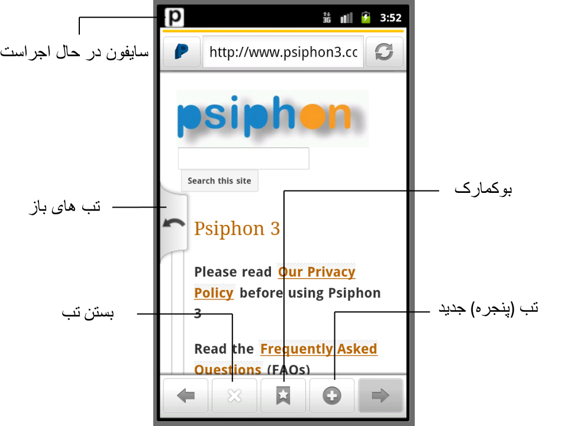

سایفون ۳ یک ابزار فیلترینگ از شرکت سایفون است که با استفاده از وی پی ان، اس اس اچ و پراکسی اچ تی تی پی برای شما دسترسی به اینترنت بدون فیلتر را فراهم میکند. کلاینت (یا بازدید کننده ) سایفون ۳ بطور اتوماتیک تقاط دسترسی جدید را فرا می گیرد تا شانس شما را برای عبور از سانسور بیشتر سازد.
سایفون ۳ برای فراهم کردن دسترسی آزاد به مطالب اینترنت طراحی شده است. سایفون نگهداری از اطلاعات محرمانه شما روی اینترنت را افزایش نمی دهد و نباید به عنوان یک ابزار محافظ در محیط اینترنت مورد استفاده قرار گیرد.
برای دانلود یا دریافت برنامه کلاینت (یا بازدید کننده) روی لینک مرتبط کلیک کنید. ویندوز إکس پی / ویستا / ۷ اندروید + ۲.۲
کلاینت (یا بازدید کننده ) سایفون ۳ برای سیستم عامل مک و آی او اس در آینده عرضه خواهد شد.
سایفون 3 برای ویندوز، هرگز به عنوان یک بسته قابل نصب توزیع نشده است.هر سایفون ۳ برای کلاینت (یا بازدید کننده) ویندوز یک فایل اجرایی می باشد که بصورت دیجیتال توسط شرکت سایفون امضاء شده است. ویندوز بطور اتوماتیک این امضا را هنگام اجرای برنامه کلاینت (یا بازدید کننده) چک می کند. شما نیز می توانید بصورت دستی قبل از اجرای برنامه کلاینت (یا بازدید کننده) با باز کردن قسمت مشخصات فایل، بخش امضای دیجیتال را چک کنید

گواهیSHA1 برای شرکت سایفون مهر تأیید می باشد. برای تأییدیه معتبر دوره زمانی ۱۶ جون ۲۰۱۱ تا ۲۱ ژوئن ۲۰۱۲ ، کلید عمومی تأیید شده در قسمت جزییات نمایش داده شده است. گواهی SHA1 بصورت زیر است:
8f:b7:ef:bd:20:a9:20:3a:38:37:08:a2:1e:0a:1d:2e:ad:7b:ee:6dو برای تأییدیه معتبر برای دوره ۲۱ می ۲۰۱۱ تا ۳۰ جولای ۲۰۱۴ گواهی SHA1 بصورت زیر است
84:c5:13:5b:13:d1:53:96:7e:88:c9:13:86:0e:83:ee:ef:48:8e:91
سایفون ۳ برای ویندوز خودش را بصورت اتوماتیک بروز رسانی میکند و این عملیات بطور خودکار اعتبار هر بروزرسانی را کنترل می کند.
روی برنامه کلاینت (یا بازدید کننده) کلیک و آنرا اجرا نمایید. هنگام اجرای برنامه،شما باید پیغام امنیتی که نشان دهد این برنامه محصول شرکت سایفون می باشد را مشاهده کنید.

سایفون ۳ بطور اتوماتیک هنگام اجرای برنامه شروع به برقراری ارتباط می کند. هنگام برقراری ارتباط، ایکون در حال چرخش نمایش داده می شود. شما می توانید یکی از روشهای تونل ارتباطی را دنبال کنید: وی پی ان، اس اس اچ یا اس اس اچ + VPN L2TP over IPSec SSH SSH plus obfuscation, a randomized layer on top of SSH to avoid protocol finger printing

ارتباط با سرور سایفون هنگامی برقرار می شود که ایکون سبز نمایش داده شود. در حالت وی پی ان همه ترافیک ارتباطی شما بصورت اتوماتیک از طریق سایفون 3 وارد تونل ارتباطی می شود.
در حالت اس اس اچ و اس اس اچ + سایفون ۳ بطور اتوماتیک مشخصه های پراکسی سییستم ویندوز را جایگذاری می کنند و ترافیک برای برنامه هایی که از این مشخصه ها پیروی می کنند را ازطریق این کانال ارتباطی عبور می دهد. این مشخصه ها بصورت پیش فرض توسط همه مرورگر های اینترنت شناخته می شوند.
به علاوه، در حالت اس اس اچ و اس اس اچ +، سایفون ۳، یک کانال مجزا پیشنهاد می کند، جایی که ترافیک ارتباطی بین المللی از طریق پراکسی کانال می شود و نه ترافیک محلی. هنگامیکه این انتخاب فعال است، دامنه های بدون پراکسی در قسمت پیامها گزارش داده می شوند. قسمت Tunneling پراکسی را چک کنید.

هنگامیکه شما برنامه را می بندید، سایفون ۳ بطور اتوماتیک قطع می شود. شما می توانید روی ایکون کلیک کنید تا ارتباط را برقرار کنید.
هر سایفون 3 برای کلاینت (یا بازدید کننده) اندروید به عنوان یک فایل APK انتقال می یابد که بصورت دیجیتال توسط شرکت سایفون امضاء شده است. کلید عمومی معتبر شرکت سایفون بصورت زیر است
Owner: CN=Psiphon Inc., OU=Psiphon Inc., O=Psiphon Inc.,
L=Unknown, ST=Unknown, C=CA
Issuer: CN=Psiphon Inc., OU=Psiphon Inc., O=Psiphon Inc.,
L=Unknown, ST=Unknown, C=CA
Serial number: 349480e5
Valid from: Fri Jun 01 12:04:42 EDT 2012 until: Tue Oct 18 12:04:42 EDT 2039
Certificate fingerprints:
MD5: BB:08:CD:91:22:FC:EB:17:1A:4A:3B:90:65:CE:2E:58
SHA1: 49:2C:3A:49:20:F3:6B:AE:95:90:EB:69:A6:36:E9:88:A7:41:7A:95
SHA256: 76:DB:EF:15:F6:77:26:D4:51:A1:23:59:B8:57:9C:0D:
7A:9F:63:5D:52:6A:A3:74:24:DF:13:16:32:F1:78:10
Signature algorithm name: SHA256withRSA
Version: 3
APK ممکن است به دو صورت ارزیابی شود: یک فایل با استخراج گواهینامه از آرشیو و چک کردن اینکه آیا کدهایش با عدد بالا منطبق است یا خیر. و روش دوم با شناسایی کردن گواهینامه فایل و امضای آن خواهد بود. برای نمونه، با استفاده از کد یونیکس و ابزار جاوا:
$ unzip -p PsiphonAndroid.apk META-INF/PSIPHON.RSA | keytool -printcert
$ jarsigner -verbose -verify PsiphonAndroid.apk
سایفون ۳ خودش را برای اندروید بطور اتوماتیک بروز رسانی می کند و این فرایند بصورت خودکار مشخص میکند که هر بروزرسانی معتبر است.
روی لینک APK سایفون با ایمیل اندروید خود یا با مرورگر کلیک کنید تا عملیات نصب آغاز شود
برای دانلود شما باید دردستگاه اندروید خود نصب برنامه های non-market را فعال سازید. سایفون ۳ بری اندروید خودش را بصورت اتوماتیک بروزرسانی می کند.

هنگامیکه شما برنامه سایفون ۳ را راه اندازی میکنید، بصورت اتوماتیک شروع به وصل شدن به شبکه سایفون می کند.

زمانیکه یک برنامه به شبکه متصل می شود، برنامه از پیش ساحته شده مرورگر سایفون را مستقر می کند. سایفون 3 برای اندروید بطور اتوماتیک ترافیک روی مرورگر پیش فرض اندروید یا برنامه های دیگر را کانالیزه نمی کند.بصورت پیش فرض، فقط مرورگر سایفون از طریق شبکه سایفون 3 کانالیزه می شود.
ما اطلاعات زیر را برای ارزیابی چگونگی عملکرد سایفون جمع آوری می کنیم. اینکه چه سایتهای محبوبیت بیشتری دارند و چه استراتژیهای تبلیغاتی کارایی بهتری دارند.این اطلاعات با شرکای ما به اشتراک گذاشته می شوند و آنها برای نمونه می دانند سایتشان توسط سایفون چه میزان بازدید کننده داشته و انها از چه کشوری بوده اند.
IP آدرس کاربران و ایمیلهای آنها هرگز جمع آوری نمی شوند. کاربران نیازی به ساختن شناسه کاربری برای استغاده از سیستم ندارند
رویدادهای وارد شده شامل برچسب زمان، کدهای منطقه ای (کد کشور GeoIP) و صفات ناشناس شامل کد ضامن ( که با هر کلاینت سایفون مشخص می گردد) ، نسخه کلاینت، و نوع پروتوکول می باشد. بازدیدهای صفحات بر مبنای زمان و /یا جلسه قبل از وارد شدن جمع آوری می گردند.
کلیه آمارهای به اشتراک گذاشته شده با ضامنین بر مبنای تاریخ، ضامن و منطقه دسته بندی می گردند.
وقتی شما حاضر به فرستادن نظر خود از طریق سایفون میشوید، امکان فرستادن اطلاعات تشخیصی را نیز دارید. ما این اطلاعات را برای شناسایی و عیب زدایی مشکل شما استفاده میکنیم و به ما کمک میکند که سایفون بهترکارکند. فرستادن این اطلاعات کاملا اختیاری است. این اطلاعات رمز گذاری میشود و فقط به توسط ما قابل به رمز گشایی است و کسی دیگری به اطلاعات دسترسی نخواهد پیدا اکرد. این اطلاعات به نسبت سیستم فرق میکنند ولی امکان دارد که شامل این اطلاعات باشد:
ویندوز
در یک دوره زمانی، سایفون ممکن است اطلاعات اضافی را برای حل کردن مشکلات خدمات ثبت کند. هنگامیکه این اتفاق میفتد ما موجودیت دیگری برای ثبت آنچه ضبط شده، زمان نگهداری و علت آن اضافه می کنیم.
سایفون ۳ یک پروژه متن باز یا اپن سورس، مي باشد. کد منبع و اسناد طراحی را می توانید ازاین طریق پیدا کنید. صفحه اصلی پروژه
کارخواه های سایفون ٣ ازاین قسمت های متن باز استفاده میکنند.
ویندوز
اندوریدس: از کجا می توانم آخرین اطلاعات درباره سایفون 3 را دریافت کنم؟
پ: با پیوستن به لیست پستی ما
س:چرا آدرسIP تونل سایفون 3 اغلب تغییر میکند؟
پ: کلاینت سایفون 3 شما بصورت اتوماتیک سرورهای جدید سایفون ۳ را شناسایی می کند. هنگامیکه آخرین سرور استفاده شده غیر قابل دسترسی باشد، سرور دیگری جایگزین می گردد.
س: چرا پیغام " خطا در برقراری ارتباط" را مرتباً دریافت میکنم؟
پ: اگر شما پیغام " خطا در برقراری ارتباط" را بطور متداوم مشاهده کردید، به این معنی است که هیچ سرور قابل دسترسی که کلاینت شما قادر به شناسایی آن باشد وجود ندارد. در این صورت باید کلاینت جدید سایفون ۳ را نصب نمایید.
س: چگونه می توانم کلاینت جدید سایفون ۳ را دریافت کنم؟
پ: یک ایمیل بفرستید به get@psiphon3.com یا ایمیلی که برای دستیابی به کلاینت فعلی سایفون ۳ استفاده کرده اید.
س: چگونه نسخه سایفون ۳ فعلی خود را چک کنم؟
پ:هنگامیکه سایفون ۳ شروع به کا رمیکند، نسخه کلاینت خود را روی اولین خط خروجی نمایش می دهد.
س: فایل "psiphon3.exe.orig" چیست؟
پ: فرایند بروزرسانی اتوماتیک سایفون 3 برای ویندوز نسخه قدیمی خود را به "psiphon3.exe.orig" تغییر نام میدهد.فایلهای قدیمی با پسوند ".orig" را میتوانند با خیال راحت پاک شوند.
س : آیا سایفون 3 برای ویندوز، همه ترافیک اینترنت کاربر را پراکسی می کند؟
پ: فقط در حالت VPN پراکسی می شوند. بعد از برقراری ارتباط موفق در حالت VPN همه ترافیک کامپیوتر شما ازطریق شبکه سایفون 3 عبور می کند. در حالت SSH فقط برنامه هایی که از آدرس محلی پراکسی های HTTP و SOCKS استفاده می کنند.
س: آیا سایفون 3 برای ویندوز با مرورگر های IE, Firefox, Safari, and Chrome web قابل تطبیق است؟
پ: بله، در حالت SSH مشخصات مرورگر خود را چک کنید و اطمینان حاصل کنید که برای استفاده از پراکسی سیستم تنظیم شده است.
س: آیا محدودیتی روی پورت در حالت VPN وجود دارد؟ چرا من نمی توانم ایمیل با استفاده از کلاینت پستی خود در حالت VPN بفرستم؟
پ:ارتباطات خارج از محدوده برای سایفون ۳ روی ویندوز فقط از روی پورت های زیر می باشد: 53, 80, 443, 554, 1935, 7070, 8000, 8001, 6971-6999. این را ببینید گفتگو برای اطلاعات بیشتر کلاینت پستی نمی تواند ارتباطی خارج از پورت 25 و 587 ایجاد نماید. این را ببینید گفتگو برای اطلاعات بیشتر
س: از چه پروتوکول VPN برای سایفون ۳ روی ویندوز استفاده شده است؟چرا نمی توانم متصل شوم؟
سایفون از پروتوکول L2TP/IPSec استفاده می کند. فایروال شبکه شما ممکن است اجازه استفاده از وی پی ان را ندهد. تنظیمات فایروال خود را چک کنید و ببینید که مسیریاب منزل شما ممکن است برای عبوراز پروتوکول VPN تنظیم نشده باشد. تنظیمات سرویس خود را چک کنید، ممکن است سرویس IPSec یا L2TP سیستم شما غیر فعال باشد. تنظیمات فایروال خود را چک کنید، ممکن است سرویس IPSec سیستم شما غیر فعال باشد. تنظیمات سرویس خود را چک کنید و این سرویس را فعال سازید تا بصورت اتوماتیک آغاز به کار کند.
س: من می توانم به سایفون ۳ برای ویندوز در حالت VPN متصل شوم، اما چرا ارتباط خیلی کند است؟ گاهی اوقات، صفحات وب اصلاً باز نمی شوند.
پ: بعضی از سخت افزارهای شبکه یا اتصالاتت اینترنت ممکن موحب بروز مشکلات کارآیی برای L2TP/IPSec که پروتوکول استفاده شده توسط سایفون ۳ در حالت VPN شود، بجای آن از حالت SSH استفاده کنید.
س:هنگامیکه به سایفون ۳ برای ویندوز در حالت VPN متصل می شوم، هیچ کدام از صفحات وب باز نمی شوند. پیغام خطایی مبنی بر خطا درجستجوی دامنه دریافت می کنم.
پ: سایفون ۳ ترافیک دی ان اس را به سرویس های مشخص دی ان اس که در لیست سفید قرار دارند ، محدود می کند.کلاینت سایفون ۳ بطور اتوماتیک تنظیمات سرور وی پی ان دی ان اس شما را انجام می دهد. اگر شما پیغام خطا مرتبط با دی ان اس دریافت می کنید، باید چک کنید که DNS Changer malware به شما سرایت نکرده باشد ،چراکه آن سبب تغییر در تنظیمات سرور دی ان اس شما می شود. برای اطلاعات بیشتر می توانید به لینک زیر مراجعه کنید: http://blogs.mcafee.com/mcafee-labs/dnschanger-trojans-v40
س: چگونه می توانم برنامه های که برای استفاده از سایفون ۳ در حالت SSH مورد استفاده قرار میگیرند را تنظیم کنم؟
سایفون ۳ بطور اتوماتیک سیستم شما را برای استفاده از پراکسی محلی HTTP/HTTPS به آدرس زیر را تنظیم می کند: 127.0.0.1:8080 و یک پراکسی محلی SOCKS به آدرس زیر 127.0.0.1:1080 برنامه های ویندوز که برای تنظیمات پراکسی سیستم استفاده می شوند بطور اتوماتیک پراکسی می شوند. شما می توانید بصورت دستی برنامه های دیگری را برای استفاده از این پراکسی های محلی تنظیم کنید. سایفون ۳ برای ویندوز و سایفون ۳ برای اندروید در حالت SSH این پراکسی های محلی را اجرا می کنند.
س: حالت SSH+ چیست؟
پ: +SSH با اضافه کردن یک لایه مبهم بالای اتصال SSH در مقابل انگشت نگاری دفاع می کند. حالت شرح پروتوکول را می توانید از این طریق جستجو کنید. here.
س: در حالت SSH برای سایفون 3 روی ویندوز ، پیغام خطای " خطا در برقراری ارتباط با پولیپو" را مشاهده می کنم. چه کار باید بکنم؟
پ: پراکسی محلی HTTP اجرا نمی شود. ممکن است فرآیند دیگری در حال انجام باشد که از پورت پیش فرض استفاده می کند.سعی کنید از یک پورت دیگر استفاده کنید. سوال "آیا می توانم پراکسی محلی HTTP را روی پورت دیگری غیر از 8080 اجرا کنم"؟ را ببینید.
س: آیا می توانم پراکسی محلی HTTP را روی پورت دیگری غیر از 8080 اجرا کنم؟
پ: بله، روی ویندوز. روی کلید "اجرا" (run ) کلیک کنید و کلمه Regedit را تایپ کنید تا یک ادیتور رجیستری باز شود. "HKEY_CURRENT_USER\Software\Psiphon3" را پیدا و سپس باز کنید، و در سمت راست "UserLocalHTTPProxyPort" را مشاهده می کنید. عدد پورت مورد نظر را به صورت دسیمال در آن قسمت وارد کنید.
س : من از پروکسی خودکار فایرفاکس استفاده میکنم AutoProxy چگونه می توانم از تنظیم پراکسی سیستم خود توسط سایفون ۳ برای ویندوز جکوگیری کنم؟
روی کلید "اجرا" (run ) کلیک کنید و کلمه Regedit را تایپ کنید تا یک ادیتور رجیستری باز شود. "HKEY_CURRENT_USER\Software\Psiphon3" را پیدا و سپس باز کنید، و در سمت راست "UserSkipProxySettings" را مشاهده می کنید. ارزش آنرا ۱ قرار دهید و سایفون ۳ دیگر بطور اتوماتیک نمی تواند تنظیمات پراکسی را انجام دهد.